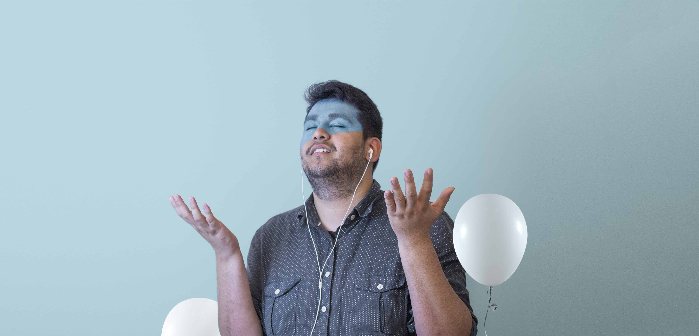
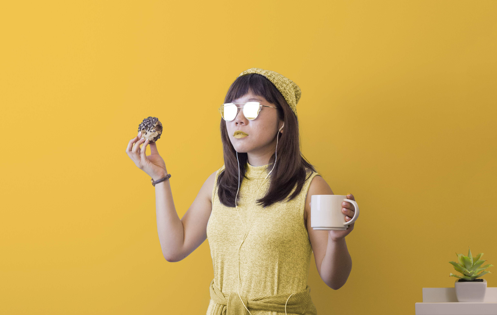
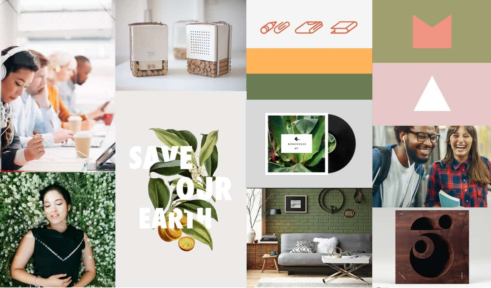
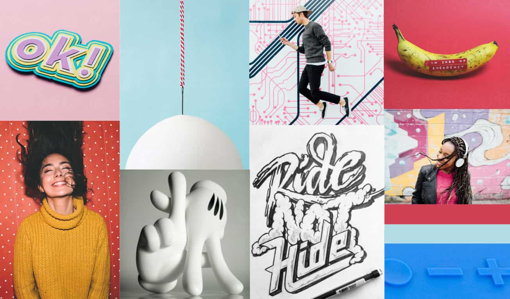
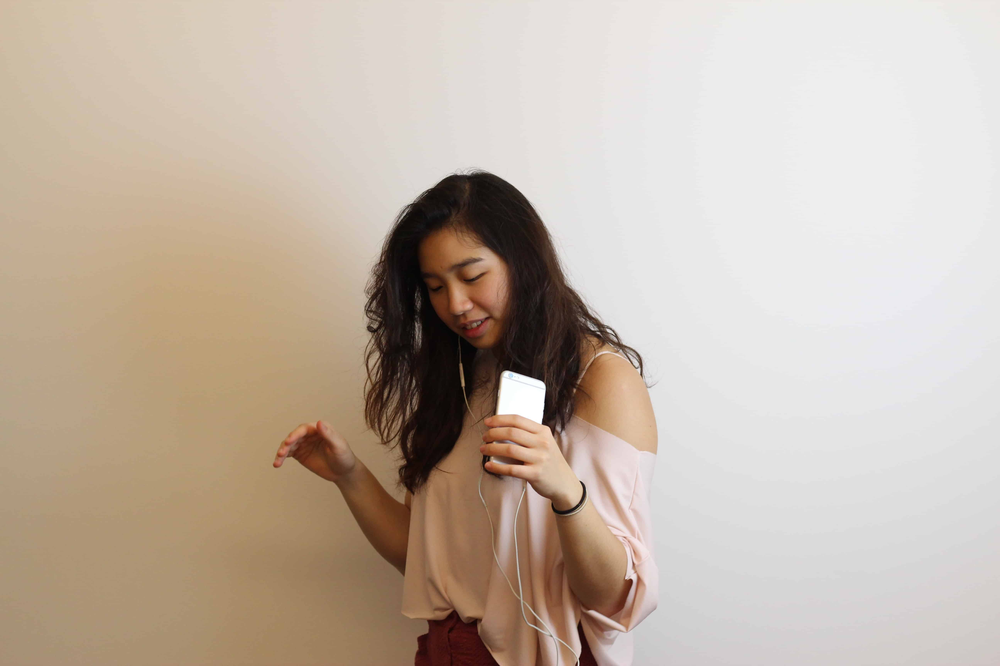
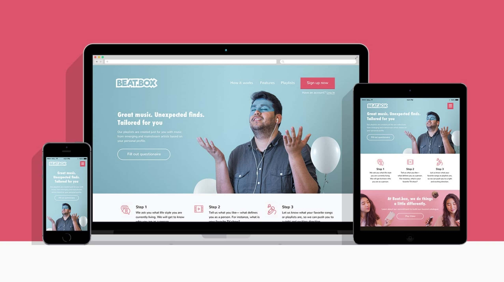
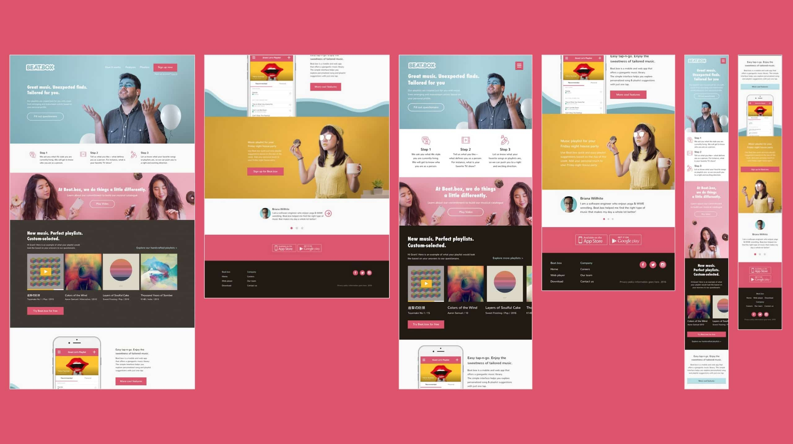

Beat.box was originally a class project from General Assembly's Visual Design class I took August 2016. Beat.box is a music app that delivers personalized music playlists based on a questionnaire users fill out at the beginning of their registration. I designed a landing page for the product, and instead of using existing photography online, I decided to take on my own photography process.
 This image was about serenity and peace from music.  Capturing a summer vibe. Feeling cute with electronic house beats.With 1-week time constraint, this photoshoot was scheduled and executed over a labor day weekend. The photos were picked, edited and Photoshopped by the following week for usage on the website. Special shoutout to Miguel, Ning, and Waverly for making this possible with such short notice and for giving permission to show these photos. Check out more of my photography work at @boomnbust.
Starting out by looking at competitors such as Pandora, Spotify, SoundCloud, and Apple Music, I wanted to make sure the visual language of Beat.box was serving an area of potential users that were not specifically addressed in the current competitive landscape. I created two different moodboards using photos from Stocksy, Cory Marriot, and Designspiration to explore possibilities of what Beat.box can be as a brand personality— earthy, relaxing, introspective, or passionate, bold, and unapologetic. I eventually went with the passionate moodboard as it emits a more explicitly positive emotion.
 Art Direction option 1.  Art Direction option 2.One essential aspect I want to tackle for this photoshoot is capturing unique and even eccentric personality unique to each model I work with. The concept is that everyone represents a unique pattern based on the music they love. I created a quick online survey targeting music lovers who were interested in being a model for the shoot.
The survey contains questions such as "what are your favorite genres?", "what is the song you have been listening to on repeat?", and "if you were on a fashion runway, what would your outfit look like?". Upon receiving responses, I schedule a call with the models to chat with them more about their personality and outfit choices.
With my Cannon 600D/T3i, I set up 1 soft box against a white wall to create a soft shadow. With their favorite music playing in the background. I asked models to fully immerse themselves in the music and rhythm.
 A unedited shot from inside an office.With these photography I finally produced, I placed them into the wireframe I created for the Beat.box landing website.
 Intentially leaving white space so the text can work around the image, though it could probably be benefited from some geo metric texture/shapes.  Full spread.If you are interested in doing a customized shot in this style. Shoot me a message!